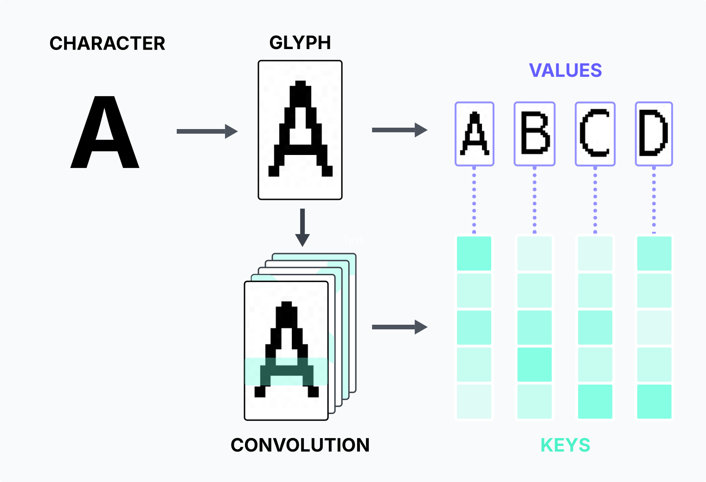
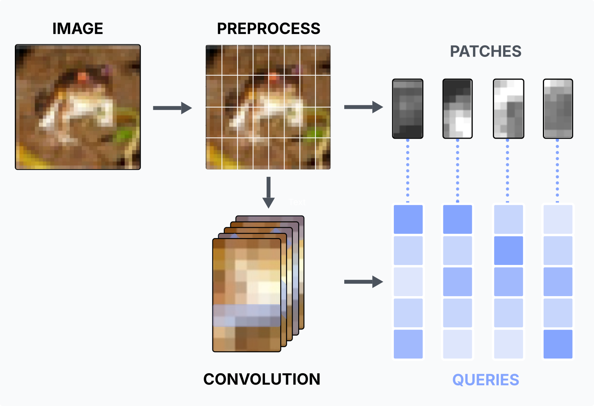
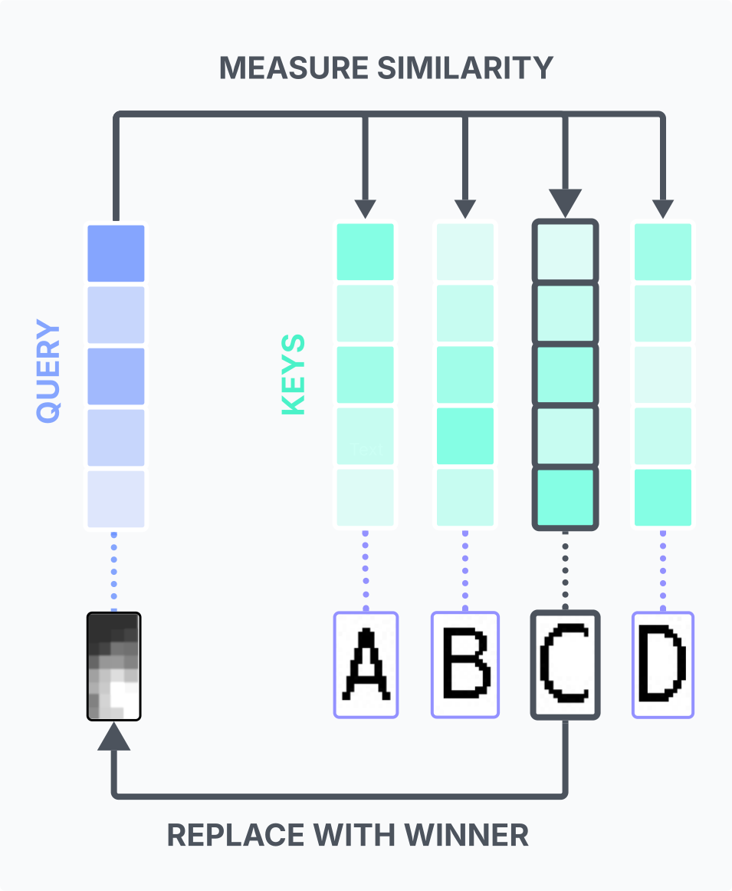
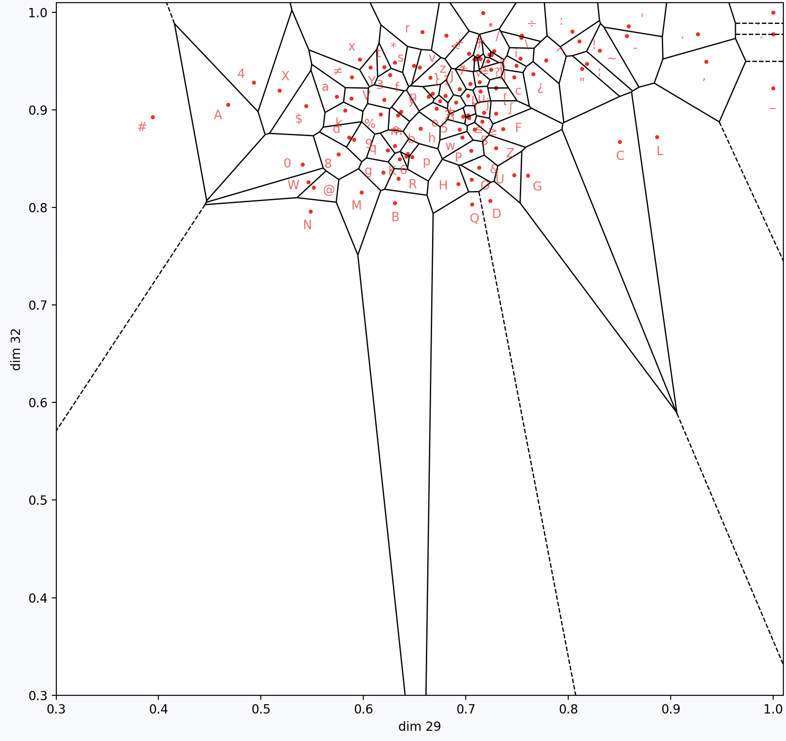
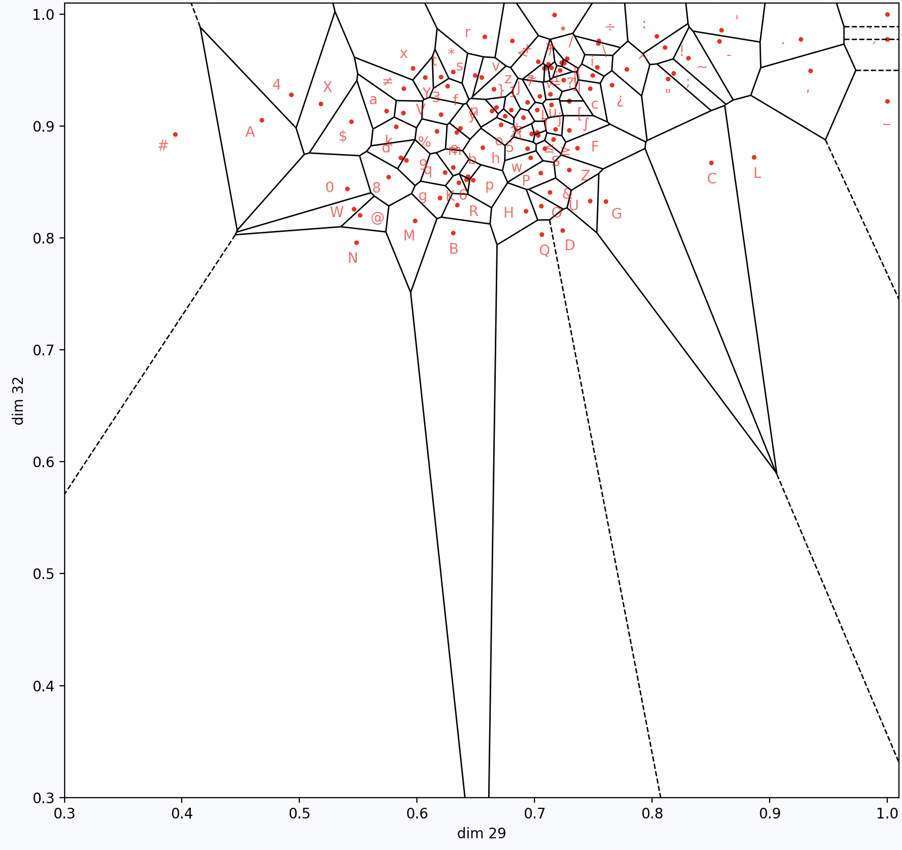
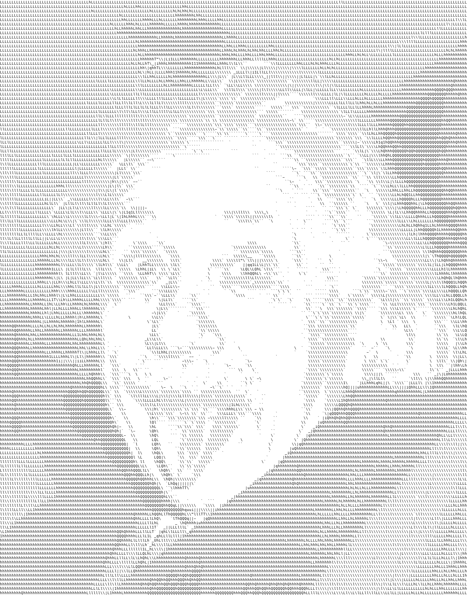

Image-to-ASCII using Key-Value Memory

pip install "git+https://github.com/agbrothers/asciify.git"Overview
In an effort to clean up old code, I recently reworked an image-to-ASCII script I made years ago. My goals were to make the code both more effective (better quality conversions) and more efficient (able to convert live video streams). In doing so, I made a number of surprising connections to machine learning concepts I've gained experience with in the years since. Namely, (1) this whole algorithm can be mapped onto a broader class of key-value memories [1], and (2) the conversion can be sped up significantly by using 2D convolutions. In fact, the whole process can be viewed simply as pixel-character association in an embedding space. Below is a visual guide through this process.

Figure 1. Building a key-value memory from character embeddings and glyphs.
How it works
For each patch of pixels in an image, our goal is to retrieve the the ASCII character with the most similar shape and brightness. First, we define a palette: the set of ASCII characters we want to use to paint our picture. We render each character in our palette to obtain a glyph, a 2D array of the character in pixels. These are 15x8 pixels using default size 12 Menlo font.
Just like a hash table, or dictionary, we want to store our characters as a set of key-value pairs. In this case, the values are our glyphs, the items we ultimately want to retrieve. Keys, on the other hand, are usually simple descriptors used to access the corresponding value, like an address. For this application, we want our keys to be lightweight numerical descriptions of the brightness and shape of each character, so that we can use a kind of similarity metric with pixel patches to facilitate fast lookup.
A well-known and efficient method to extract descriptive features from pixels is the 2D convolution [2]. This involves taking a set of filters (kernels), each of which computes a weighted average of the character pixels with a goal of detecting features, like an edge or object. We design the filters to be the same height and width as our character glyphs so that the output of each filter is a single scalar value indicating the presence of the corresponding feature. The weights of these filters are set by hand to detect 34 different features of interest, including horizontal lines, vertical lines, diagonal lines, and circles in different parts of the glyph, as well as overall brightness. We then collect the outputs from all filters into into a single feature vector that compactly describes the character, which we store as a key as shown in Figure 1 above. With this, our ASCII memory is ready for action.

Figure 2. Generating queries from image patches using 2D convolutions the same shape as our character glyphs.
Now we need to determine how to compare our input image with our keys. Similar to the way a vision transformer processes images, we will just partition each frame into a set of patches [3], then compare each pixel patch to the keys of our memory to identify the character with the most similar features. By setting these patches to be the same size as our glyphs, we can conventiently use the same convolutional filters to extract patch features as shown in Figure 2 above, as well as easily swap patches for glyphs as shown in Figure 3 below.

Figure 3. We use nearest-neighbor association between a query and the set of stored keys to recall the most similar character glyph for each pixel patch.
Finally, the recall process. Here, we simply choose a similarity metric, in our case negative distance, and pick the glyph whose key is most similar to the query. We then swap out the pixels for the glyph and repeat. This can be implemented very efficiently under the hood using pytorch 2D convolutions, tensor indexing, and reshaping.
Room for Improvement
Since we are using nearest neighbor lookup, our character embedding space resembles a high-dimensional voronoi diagram, as shown in Figure 4 below. Each light blue point corresponds to an embedded character, and each character has a basin of attraction around it that "captures" any pixel patches that get mapped into it.
 

Figure 4. Left, voronoi cells as basins of attraction. Right, a voronoi cells of our actual key embeddings, showing how the distribution is sparse in the darker region near the origin.
Why is this a limitation? Well, any characters that are at the extremes of the feature space, like very dark, bold characters ("N", "M", "W") or very light characters (".", "•"), naturally have larger basins of attraction, because few competing characters exist to bound their cells. Compounding this issue, even the darkest of characters have a lot of white space, so all of our keys are biased towards the lighter region of our space. The images we are drawing queries from, however, are much more uniformly distributed in the pixel color space, often having rich details in dark parts of the image. When most of the dark pixel patches fall into the voronoi cells for "M" and "N", the resulting image loses a significant amount of detail as a direct result of lacking competition. As shown in the figure below, maximizing competition in voronoi space is the key to getting good results.
Figure 5. The effect of exposure on image query embeddings (blue). Left, we plot the distribution of queries from an unedited image over the voronoi plot. Right, we apply an exposure value of 0.5, which brightens all query patches and moves the distribution over a more competitive region of the voronoi space. This recovers a significant amount of detail from the dark portions of image.
So, how can we remedy this?
- Add more characters to the palette. Specifically, adding a larger diversity of characters near the feature extremes. The ideal palatte should result in as even of a tiling of the embedding space as possible
- Define a better kernel. Perhaps even separate kernels for embedding pixels and characters. The ideal character kernel should accurately capture a variety of shape features and cleanly disentangle shape from brightness. Perhaps this is an area where learned filters could yield an interesting result.
- Image preprocessing. Rather than making our character embedding space more uniform with respect to the embedded pixel patches, we can squash our pixel space queries to map more uniformly over our character voronoi cells through methods like increasing exposure or contrast, as shown in the Figure 5 above.
In the current implementation, (2) is set by hand, while (1) and (3) are left up to user input. There is much room for improvement in all three of areas.
Why not use the glyphs themselves as keys?
Why bother with convolutions and handcrafted features at all, when we could just flatten the glyphs and use them as both the keys and values? Well, unlike what we just discussed, such a feature space does not disentangle shape features from brightness of characters and pixel queries, and is heavily biased towards the latter. It also seems to excacerbate the problem where a handful of heaver or broader characters have basins of attraction that dominate the space. The result is a memory that is bad at both representing its values and constructing its queries, resulting in both poor competition and poor pixel-to-character shape association. Thus a large amount of detail in the resulting image is washed away, as shown in the figure below.

Figure 5. Left, using the flattened glyphs as the keys and flattened pixel patches as the queries. Right, using the hand-crafted convolutional filters proposed in the previous sections. The same parameters and image processing was applied to both instances.
Connections to Machine Learning
Beyond the surface-level nearest neighbor interpretation, it can be interesting to connect this simple process to other relevant algorithms in machine learning. Anyone who has studied transformers probably jumped to connect the query-key-value concepts here to attention. Indeed, this can be viewed as a form of hard cross-attention, replacing the dot product association with negative distance for computing attention weights. To make the attention "hard", the softmax is replaced by an argmax over the keys [4][5]. Unsurprisingly, the ascii memory association process can also be likened to the update step for recall in a generalized dense associative memory. As in our attention caveat, our similarity function here would be negative distance and we could achieve approximately "hard" memory associations by setting the temperature of our energy function to be near zero [6]. Most glaringly, though, our whole memory inference pipeline looks remarkably similar to the design of a VQ-VAE [7], an earlier generative model designed and trained self-supervizedly for image synthesis. The VQ-VAE encodes an image through convolution, then takes the latent encodings for overlapping patches of the image, looks up the most similar item from a learned dictionary of embeddings, and swaps each patch encoding for a dictionary embedding before passing this latent representation to a decoder. Under this lens, one might view the VQ-VAE instead as a crude form of autoassociative memory.
We might also relate this approach to an older line of work: self-organizing maps [8]. Kohonen developed these simple neural network models in the 80's as a method for learning structured representations from data in an unsupervised manner. They feature a set of neurons which compete to fire for a given input. Only the neuron that activates strongest for a given input will fire, hence the names winner-takes-all activation. Then winner then updates itself and its neighbors to be more similar to the input, with this process known as competitive learning. Ignoring the topological aspects, we can view our character key-value memory as loosely similar to the inference loop of a self-organizing map, with our keys corresponding to the neurons in the map, and the winning neuron corresponding our most similar key. More interestingly, self-organizing maps encounter many of the same difficulties we discussed above, namely regarding how initialization of neurons influences their resulting competition over inputs. Choosing a bad set of initial neurons might result in a handful of them always winning, hoarding all of the updates and learning signal. As in other aspects of life, monopolies induce bad dynamics. The stifling of competition prevents any of the other neurons from learning diverse and meaningful representations, resulting in a rather useless model of the data. Similarly, when we chose a poor embedding method for our keys in the last section, a small handful of characters monopolized our embedding space, resulting in an ASCII image with little to no detail.
For a project that looks like pure image processing on the surface, there are a surprising number deep ties to ideas and problems in machine learning. My goal here was both provide a visually intuitive primer on key-value memory and to demonstrate that there may be many more algorithms that fall under this general category of memory than we realize.
References
- S. Gershman, I. Fiete, K. Irie Key-value memory in the brain. Neuron, 2025.
- Y. LeCun, L. Bottou, Y. Bengio, and P. Haffner. Gradient Based Learning Applied to Document Recognition. Proceedings of the IEEE, 1998.
- A. Dosovitskiy, L. Beyer, A. Kolesnikov, D. Weissenborn, X. Zhai, T. Unterthiner, M. Dehghani, M. Minderer, G. Heigold, S. Gelly, J. Uszkoreit, and N. Houlsby. An Image is Worth 16x16 Words: Transformers for Image Recognition at Scale. International Conference on Learning Representations, 2021.
- K. Xu, J. Ba, R. Kiros, K. Cho, A. Courville, R. Salakhudinov, R. Zemel and Y. Bengio Show, Attend and Tell: Neural Image Caption Generation with Visual Attention. Proceedings of the 32nd International Conference on Machine Learning, 2015.
- T. Luong, H. Pham, and C.D. Manning, Effective Approaches to Attention-based Neural Machine Translation. Proceedings of the 2015 Conference on Empirical Methods in Natural Language Processing, 2015.
- D. Krotov, B. Hoover, P. Ram, and B. Pham. Modern Methods in Associative Memory. International Conference on Machine Learning, 2025.
- A. Oord, O. Vinyals, and K. Kavukcuoglu. Neural Discrete Representation Learning. Neural Information Processing Systems, 2017.
- T. Kohonen. Self-organized formation of topologically correct feature maps. Biological Cybernetics, 1982.